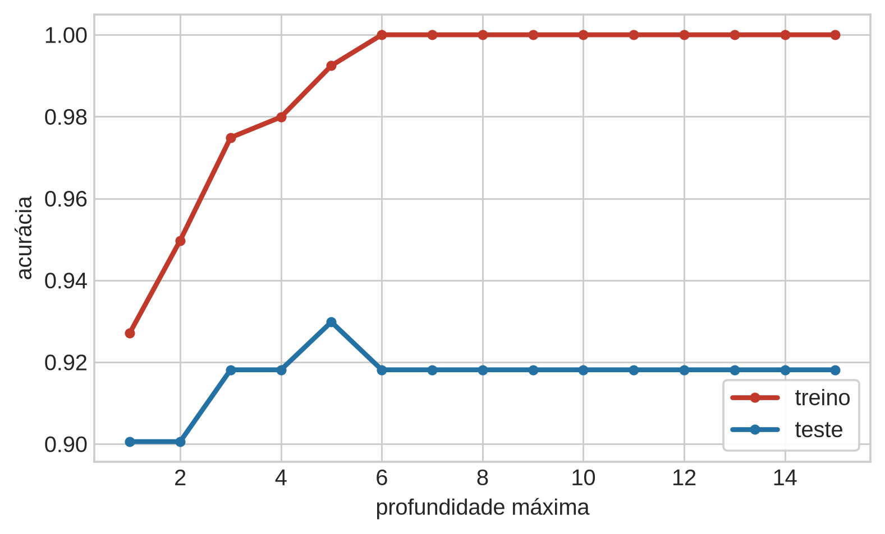
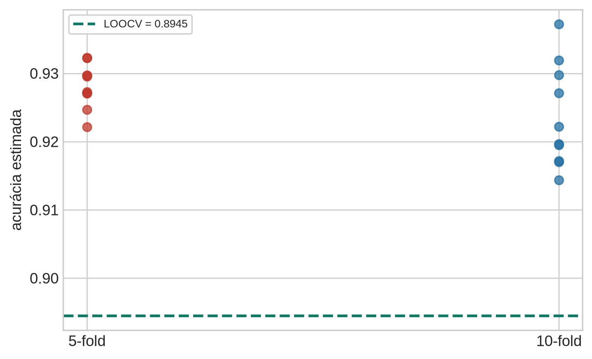
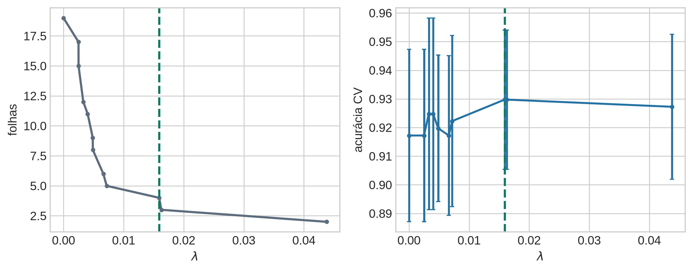
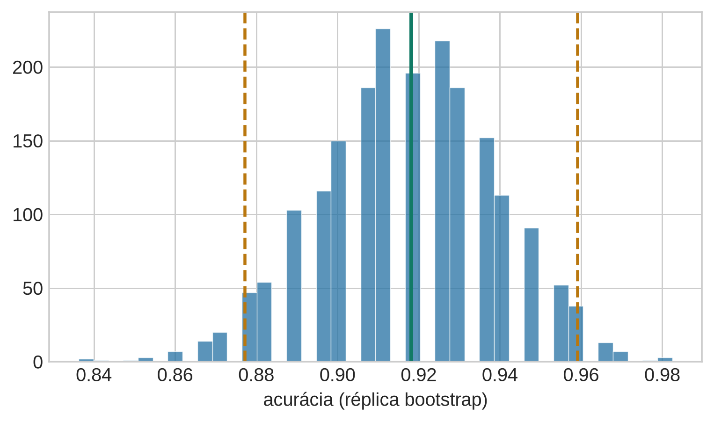
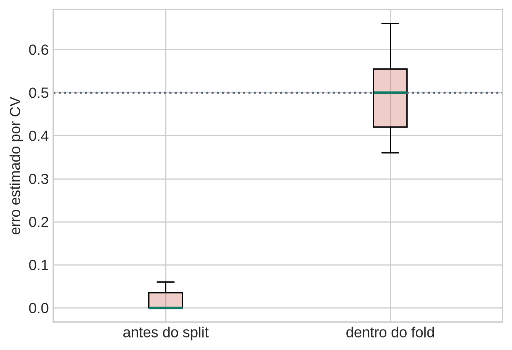

Aula 4 — Fundamentos Estatísticos do Aprendizado Supervisionado
2026-08-30
A Aula 3 podou uma árvore “olhando o gráfico”. Como fazer isso de forma sistemática?
Hoje muda o objeto de estudo: não um modelo, mas o procedimento de escolher entre modelos.
Pela primeira vez no curso: dado real — Breast Cancer Wisconsin, 569 pacientes.
Roteiro: erro de treino → validação cruzada → escolha de \(k\) → Bootstrap.

Treino: 100% a partir da profundidade 6. Teste: pico em 93,0% na profundidade 5, depois estagna.
\(\hat{R}(\theta)\) é calculado nos mesmos dados que escolheram \(\theta\).
\(\hat{R}(\theta)\) é enviesado para baixo como estimador do risco esperado \(R(\theta) = \mathbb{E}_{(X,Y)\sim P}[\mathcal{L}(Y,f_\theta(X))]\).
Se a árvore de profundidade 15 tem a mesma acurácia de teste da árvore de profundidade 6, por que ainda preferimos uma árvore mais rasa?
Escreva sua resposta e compare com um colega antes de avançar (2 min).
Dica
Julgue V ou F — a questão só conta se acertar os 4 itens:
Dica
Consultar o teste repetidamente durante o desenvolvimento contamina o que ele deveria significar.
Um colega ajusta hiperparâmetros usando só a validação, mas de vez em quando “espia rapidinho” o teste para decidir se vale a pena continuar tentando profundidades maiores. Ele nunca usou o teste para ajustar nada — o que exatamente ele perdeu ao fazer isso?
Escreva sua resposta e compare com um colega antes de avançar (2 min).
Dica
Julgue V ou F — a questão só conta se acertar os 4 itens:
Dica
“Estima diretamente o erro esperado fora da amostra […] quando o método é aplicado a uma amostra de teste independente, vinda da distribuição conjunta de \(X\) e \(Y\)” (ESL, §7.10).
Cada fold = uma aproximação de “coletar uma nova amostra de teste”.
\[ \text{CV}(\hat f) = \frac{1}{N}\sum_{i=1}^{N} \mathcal{L}\bigl(y_i,\, \hat f^{-\kappa(i)}(x_i)\bigr) \]
\(k\) rodadas, cada uma treinando sem um bloco e avaliando nele. A média estima \(\mathbb{E}_{(X,Y)\sim P}[\mathcal{L}]\).
Proporção de malignos por fold (estratificado):
fold 1: 0.375 (treino inteiro: 0.372)
fold 2: 0.375 (treino inteiro: 0.372)
fold 3: 0.375 (treino inteiro: 0.372)
fold 4: 0.367 (treino inteiro: 0.372)
fold 5: 0.367 (treino inteiro: 0.372)Sem estratificação, um fold pequeno pode, por azar, concentrar poucos ou muitos casos malignos.
Por que a média de k avaliações de validação é uma estimativa melhor do erro esperado do que um único split treino/validação?
Escreva sua resposta e compare com um colega antes de avançar (2 min).
Dica
Julgue V ou F — a questão só conta se acertar os 4 itens:
Dica
“[Com K=N] pode ter alta variância, porque os N ‘conjuntos de treino’ são tão parecidos uns com os outros” (ESL).

Achado honesto: aqui, LOOCV (89,4%) ficou abaixo de 5-fold e 10-fold (~92–93%) — estimativas diferentes, ambas com ruído.
Segundo achado honesto: o 10-fold, apesar de teoricamente mais próximo do LOOCV, teve mais variação entre repetições do que o 5-fold nesta amostra — “mais \(k\), mais estável” é uma tendência média, não uma garantia caso a caso.
\(k=5\) ou \(10\): escolha prática padrão — muito mais barato que LOOCV (\(N\) ajustes), qualidade competitiva.
Se LOOCV é “quase sem viés”, por que ele não é sempre a escolha certa — e por que, nesta amostra específica, ele produziu uma estimativa MENOR do que 5-fold e 10-fold, em vez de simplesmente “mais precisa”?
Escreva sua resposta e compare com um colega antes de avançar (2 min).
Dica
Julgue V ou F — a questão só conta se acertar os 4 itens:
Dica

Completa: 19 folhas, teste 91,8%. Escolhida por CV: 4 folhas, teste 91,8% — igual, mais simples.
Escolhe o modelo mais simples dentro de 1 erro-padrão do melhor CV — aqui, 2 folhas.
Custo real: acurácia de teste cai para 90,1%. Parcimônia não é sempre de graça.
Se a árvore de 4 folhas e a árvore de 19 folhas empatam na acurácia de teste, o que exatamente a validação cruzada “comprou” ao escolher a mais simples?
Escreva sua resposta e compare com um colega antes de avançar (2 min).
Dica
Julgue V ou F — a questão só conta se acertar os 4 itens:
Dica
“Sortear, com reposição, conjuntos de dados a partir dos dados de treino […] \(B\) vezes” (ESL, §7.11).
Cada réplica \(Z^{*b}\) gera uma estatística \(S(Z^{*b})\); com \(B\) réplicas, a própria variância de \(S\) já pode ser estimada diretamente: \[ \widehat{\mathrm{Var}}[S(Z)] = \frac{1}{B-1}\sum_{b=1}^{B} \bigl(S(Z^{*b})-\bar S^*\bigr)^2 \]
Premissa usada a seguir: para \(B\) grande, os percentis empíricos das réplicas aproximam os percentis da verdadeira distribuição amostral de \(S\) — é isso que sustenta o IC percentílico do próximo slide.

Ponto: 91,8%. IC 95%: [87,7%, 95,9%] — largo, com só 171 pacientes de teste.
Reamostrar o teste: incerteza de medir a acurácia com uma amostra de teste finita.
Reamostrar o treino + reajustar: instabilidade do procedimento de ajuste em si.
CV estima risco esperado. Bootstrap estima variabilidade amostral. Perguntas complementares, não concorrentes.
Por que reamostrar o conjunto de teste e reamostrar+reajustar no conjunto de treino respondem perguntas diferentes, mesmo usando a mesma técnica de reamostragem com reposição?
Escreva sua resposta e compare com um colega antes de avançar (2 min).
Dica
Julgue V ou F — a questão só conta se acertar os 4 itens:
Dica
\(N=50\), \(p=5\,000\) atributos independentes do rótulo. Erro real de qualquer classificador: 50%.
Prática comum, e sutilmente errada: (1) selecionar os 100 atributos mais correlacionados com o rótulo usando toda a amostra; (2) treinar um classificador (1-vizinho-mais-próximo) só com esses 100 atributos; (3) validar esse classificador por CV.

Selecionar antes: erro estimado \({\sim}1{,}5\%\) (real: 50%!). Selecionar dentro do fold: \({\sim}48\%\), honesto.
Nossa poda: CV = 92,97% ± 2,43%. O número sozinho, sem o desvio, sugere precisão que não existe.
Por que selecionar os atributos mais correlacionados usando a amostra inteira, antes do split de CV, é uma forma de vazamento de dados mesmo que o classificador final só veja os dados de treino de cada fold?
Escreva sua resposta e compare com um colega antes de avançar (2 min).
Dica
Julgue V ou F — a questão só conta se acertar os 4 itens:
Dica
Próxima aula: Regressão Linear — mínimos quadrados como máxima verossimilhança sob ruído gaussiano.
UNICAMP — Instituto de Computação